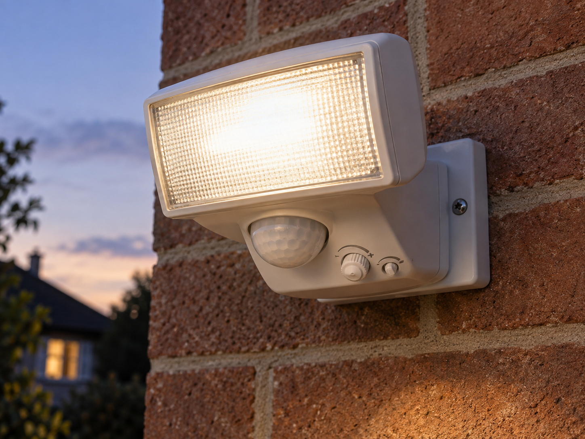
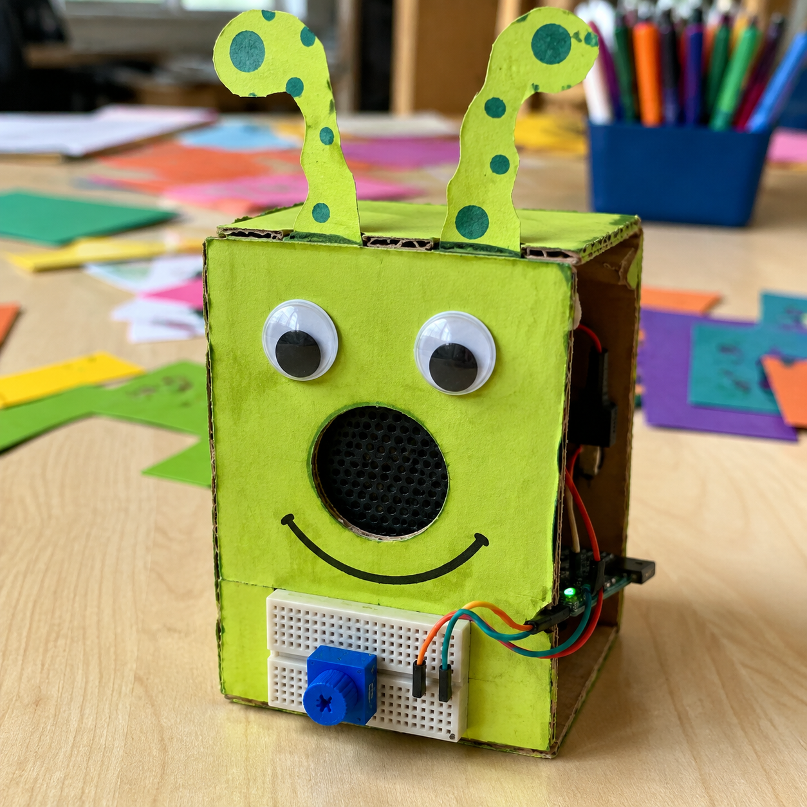

Security-light adjustment
DetectRead sensitivity setting
DecideIs movement strong enough?
DoSwitch the light on
A potentiometer lets your code read how far a knob has been turned.
This small version is called a trimpot. Turning the blue knob moves a contact called the wiper, changing the voltage your board reads.
Use it to choose a speed, a brightness or a sound. Turn gently and stop at the ends. The marking 103 means 10 kΩ.


from gpiozero import MCP3008
pot = MCP3008(0, select_pin=22)
setting = pot.valuesetting runs from 0 to 1. Read pot.value again after turning; pot.voltage gives volts. The Pi needs the MCP3008 converter shown. Power the trimpot and converter from 3V3.